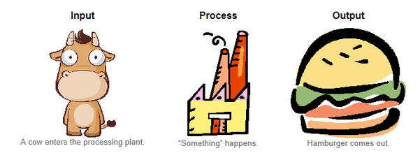
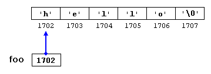
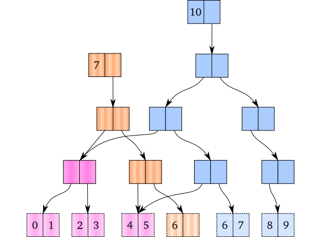
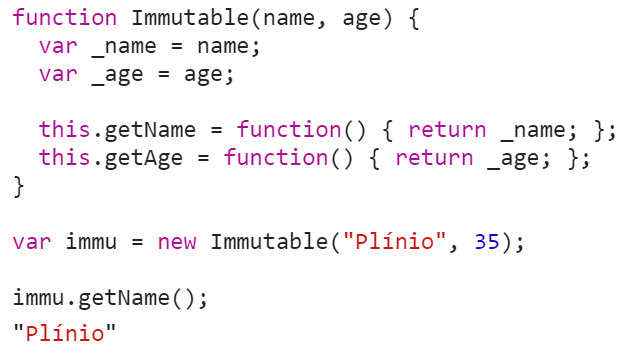
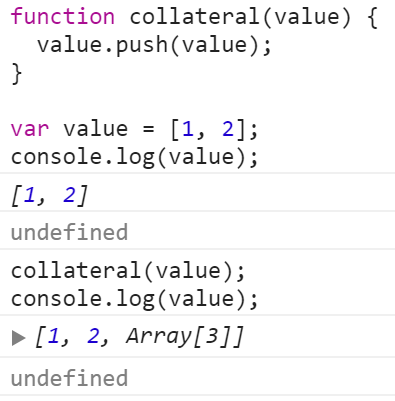

Imutabilidade
Mitos e Verdades
Plínio Balduino / @p_balduino
Plínio Balduino
Desenvolvedor, autor, criador do (clj-sp)
Conclusão
Imutabilidade é uma boa prática importantíssima
Mas não vai resolver todos os seus problemas
Premissa
O valor de uma estrutura não muda depois que ela é criada
É impossível fazer um sistema do mundo real com imutabilidade
Mito
Trate as unidades de trabalho como caixas pretas
Imutabilidade é lenta
Depende
Transiência
data1 = process(data2);
function process( data ) {
var newData = data;
while(condition) {
// process newData
}
return newData;
}
Imutabilidade gasta muita memória
Depende
Estruturas de dados persistentes

Imutabilidade é difícil
Mito
Imutabilidade simplifica o seu código
Imutabilidade é apenas para multithreading
Depende
Mas são grandes as chances de que você precisa
Imutabilidade resolve meus problemas de concorrência
Mito
Resolve a maioria, mas não todos
Deadlock

A linguagem que eu uso não tem suporte a imutabilidade
Depende
Imutabilidade depende de encapsulamento
Depende
Imutabilidade depende de encapsulamento
Mutabilidade desenfreada é ruim
Fato
Fica fácil perder o processamento de vista
Posso confiar meu objeto a uma função ou método
Depende
Se ele for mutável, NUNCA
Efeitos colaterais
Uma constante é imutável
Mito
final int[4] numbers = {0, 1, 2, 3};
// numbers = {0, 1, 2, 3}
numbers[2] = 999999;
// numbers = {0, 1, 999999, 3}